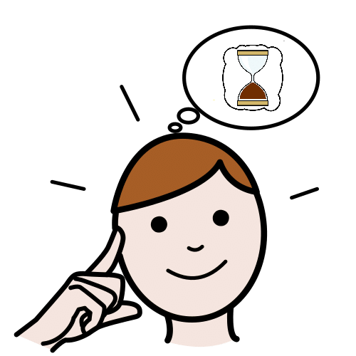
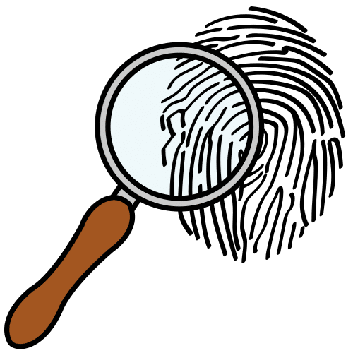

Kardia dice Las personas van creciendo con el tiempo

Apoyo visual


Ya hemos repasado y recordado algunas cosas del tiempo que nos ayudarán a seguir adelante con nuestra tarea. ¡ Vamos a investigar cómo pasan los años!
Recuerdas algunas cosas del tiempo.
Investiga cómo pasan los años
para hacer la línea del tiempo.
Vamos a seguir aprendiendo sobre el paso del tiempo en nosotros mismos. Para responder y jugar correctamente tenéis que ordenar bien las ideas y tener en cuenta que el tiempo no se ve, no se nota y sólo podemos medirlo con aparatos adecuados. Lo sentimos con nuestras propias experiencias.
Piensa sobre el paso del tiempo.
Sentimos el paso del tiempo
con nuestras experiencias.
Puedes medir el paso del tiempo con aparatos.
 Definición:
Definición:
Conocimientos que una persona o animal tiene sobre la vida. Las personas y animales consiguen experiencia en diferentes situaciones.
Ejemplo:
Mi primo tiene mucha experiencia como pintor.
Haz memoria y recuerda.
De todas estas imágenes selecciona las que indican cosas que haces normalmente a diario y no selecciones aquellas que haces en tu tiempo de descanso:
El símbolo del calor es un termómetro y el del frío es una estrella blanca. Teniendo esto en cuenta, arrastra cada imagen de la izquierda con su símbolo correspondiente de la derecha, según haga frío o calor.
Recuerda el árbol del tiempo y piensa.
Desde que nacemos las personas estamos en continuo crecimiento,a medida que pasa el tiempo nuestros cuerpos van cambiando.
Obra publicada con Licencia Creative Commons Reconocimiento No comercial Compartir igual 4.0